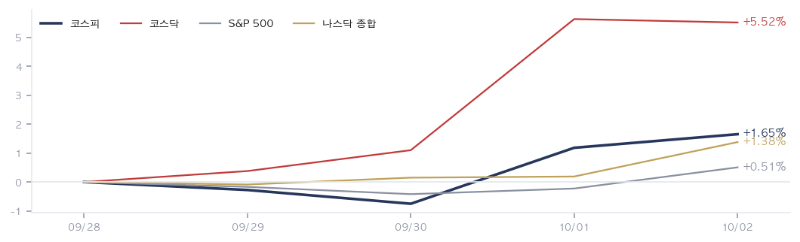
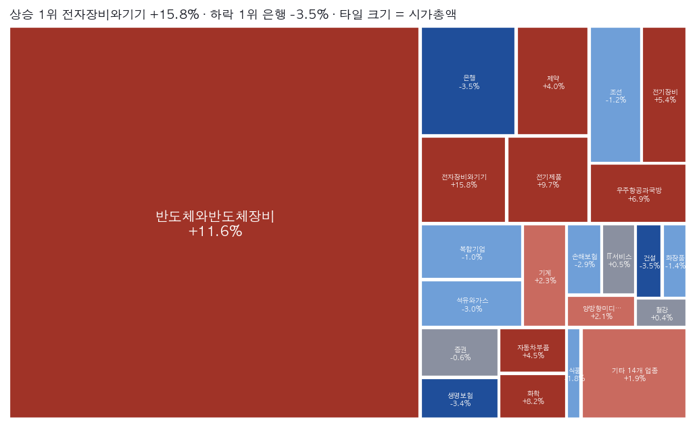

|
ZekiRex™ Apex KR 주간 결산 9/28~10/2
시장이 한 주 동안 한 일 · 1/3
데이터 기준 10/2 종가 |
ZekiRex™ |
|
|
| 저희가 정한 규칙이 고른 종목과 그 성적을 매일 그대로 싣습니다. 맞았든 틀렸든 지우지 않습니다. |
추석 연휴 뒤 첫 주는 내림세로 시작했습니다. 코스피는 9월 28일 6,889.74로 연휴 전보다 2.70% 낮게 출발했습니다. 외국인 매도에 9월 30일까지 사흘을 내렸습니다. 방향을 바꾼 것은 마이크론 실적과 9월 수출 기록입니다. 10월 1일 1.95% 올랐고, 10월 2일 7,003.74로 마쳤습니다. 주간으로는 1.65% 상승입니다. 저희 모의 포트폴리오는 같은 기간 0.29% 올라 지수에 못 미쳤습니다. |
| 이번 주 반드시 알아야 할 5가지 |
한 주에 일어난 일 가운데 돈에 영향을 준 것만 5가지입니다. 각 항목은 사실, 왜 그런가, 그래서 무엇인가 순입니다. | 1 | 연휴 뒤 사흘 내린 코스피, 이틀 만에 7,000선 회복 사실 코스피는 9월 30일 6,838.04로 연휴 전 9월 23일 종가보다 3.43% 낮았습니다. 그 뒤 이틀 올라 7,000선을 되찾았습니다. 왜 외국인은 9월 29일 하루에 3조800억원을 팔았습니다. 9월 30일에는 외국인과 기관이 함께 3조원을 팔았습니다. 행동 — 연휴 전 종가 7,080.92에는 아직 못 미칩니다. 연휴 동안 쌓인 해외 재료를 다 받고도 그 아래에 있다는 뜻이니, 반등을 추세로 보시기 전에 외국인 매매가 돌아서는지를 먼저 확인하십시오. | | 2 | 미 10년물 금리, 장중 24년 만의 최고 사실 미 10년물 금리가 10월 1일(현지시간) 장중 5.33%를 넘어 2002년 이후 최고를 기록했습니다. 그 뒤 5.24%로 마쳤습니다. 왜 8월 개인소비지출 물가는 3.4%로 예상을 밑돌았습니다. 그런데도 금리가 올랐습니다. 마이클 바 연준 이사는 추가 인상이 필요할 것이라고 말했습니다. 행동 — 물가가 식어도 금리가 오르면, 먼 미래 이익으로 값이 매겨진 성장주가 먼저 제값을 못 받습니다. 대출이 많은 회사를 들고 계시다면 이자 부담이 이번 분기 이익에서 얼마인지 확인하십시오. | | 3 | 9월 수출 사상 최대… 반도체 첫 600억달러 사실 산업통상부가 10월 1일 발표한 9월 수출은 약 1209억달러로 월간 최대였습니다. 반도체가 처음 600억달러를 넘었습니다. 왜 1~9월 누적은 8145억달러입니다. 연 1조달러가 가시권이라는 분석이 나왔습니다. (동아일보·이데일리) 행동 — 수출 숫자가 큰 만큼 원화도 강해졌습니다. 수출 기업을 들고 계시다면 다음 분기 이익을 볼 때 환율이 깎아 낸 몫을 함께 계산하십시오. | | 4 | 마이크론 실적에 서울 반도체 동반 상승 사실 마이크론은 9월 30일(현지시간) 4분기 매출 약 542억달러를 냈습니다. 다음 분기 매출은 615억달러로 제시했습니다. 왜 업종별로는 반도체와반도체장비가 주간 11.57% 올랐습니다. 10월 1일 코스닥에서 외국인과 기관이 9000억원 가까이 샀습니다. 행동 — 한 회사의 숫자에 업종 전체가 함께 올랐습니다. 반도체 비중이 큰 계좌라면 다음 실적 발표 전까지는 같은 이유로 함께 내릴 수 있다는 점도 계산에 넣으십시오. | | 5 | 은행·보험은 반대로 하락 사실 업종 주간 등락은 은행 3.51%, 생명보험 3.38%, 손해보험 2.92% 하락입니다. 왜 오른 쪽은 전자장비와기기 15.85%, 반도체와반도체장비, 전기제품 9.72%입니다. 지수를 끈 업종과 금융이 정반대로 갔습니다. 행동 — 금리가 높으면 은행이 유리하다는 통념과 반대로 간 주입니다. 은행·보험주를 들고 계시다면 금리 수준보다 반도체로 쏠린 매수가 언제 돌아서는지를 먼저 보십시오. |
|
| 한 주 결산 |
| 지표 | 금요일 종가 | 주간 | 연초 이후 | | 코스피 | 7,004 | +1.65% | +62.51% | | 코스닥 | 893 | +5.52% | -5.53% | | S&P 500 | 7,723 | +0.51% | +12.60% | | 나스닥 | 27,191 | +1.38% | +17.02% | | 비트코인 | $84,538 | +1.29% | -4.73% | | 원/달러 | ₩1,347.00 | -0.96% | -6.89% | | 미 국채 10년 | 5.28% | +0.04%p | +1.09%p | | WTI 원유 | $91.3 | -1.45% | +59.21% | | 금 | $4,172 | +0.09% | -3.64% |
서울에서는 코스닥이 앞섰습니다. 코스닥은 5.52% 올라 893.29로 마쳤습니다. 미국은 S&P 500이 0.51%, 나스닥 종합이 1.38% 올랐습니다. 원·달러는 0.96% 내려 1,347.00원입니다. 원화가 그만큼 강해졌습니다. 미 10년물 국채금리는 0.04%포인트 올라 5.28%입니다. 주식은 올랐는데 장기 금리는 내려오지 않았다는 뜻입니다. |
주간 지수 궤적  주간 지수 궤적입니다. 코스피는 9월 30일에 가장 낮았고 10월 2일에 가장 높았습니다. 선의 모양을 보시면 상승분이 마지막 이틀에 몰려 있습니다. 코스닥은 10월 1일까지 나흘 연속 올랐습니다. 두 선이 주 초에 갈렸다는 것은 외국인 매도가 대형주에 몰렸다는 뜻입니다. |
업종 히트맵 — 한 주의 상승·하락 지도  업종 히트맵입니다. 칸의 크기는 시가총액이고 색은 주간 등락입니다. 가장 큰 칸인 반도체와반도체장비가 올라 지수를 끌었습니다. 수익률 1위인 전자장비와기기는 칸이 훨씬 작습니다. 저희가 보는 종목의 주간 평균은 3.79%였습니다. 큰 칸이 함께 움직였을 때가 진짜 주도 업종입니다. 그래서 다음 매수 후보도 그 칸에서 나옵니다. |
| 한 주 움직인 것 |
주간 전체를 거래한 349종목 기준 · 따라가는 종목 350개 그 주 오른 종목 | 앱클론 174900 | +45.54% | | 삼천당제약 000250 | +29.39% | | 세미파이브 490470 | +28.88% | | 지투지바이오 456160 | +28.40% | | 이수스페셜티케미컬 457190 | +27.17% | | 성호전자 043260 | +27.13% | | 태성 323280 | +26.10% | | 제주반도체 080220 | +25.24% | | 와이씨 232140 | +23.49% | | 대덕전자 353200 | +22.60% |
| 그 주 내린 종목 | 메지온 140410 | -13.71% | | 오름테라퓨틱 475830 | -13.20% | | 효성티앤씨 298020 | -11.74% | | 에이프릴바이오 397030 | -9.39% | | 한화생명 088350 | -8.59% | | HD건설기계 267270 | -8.10% | | GS 078930 | -8.05% | | 케이아이엔엑스 093320 | -7.83% | | 제이에스링크 127120 | -7.62% | | 한국콜마 161890 | -7.36% |
|
오른 쪽은 바이오와 반도체가 채웠습니다. 앱클론 45.54%, 삼천당제약 29.39%, 세미파이브 28.88% 상승입니다. 내린 쪽에는 바이오와 소재가 섞였습니다. 메지온 13.71%, 오름테라퓨틱 13.20%, 효성티앤씨 11.74% 하락입니다. 저희가 보는 350종목 가운데 349종목의 주간 평균은 3.79% 상승이었습니다. 같은 바이오 안에서도 방향이 갈렸으니, 업종보다 종목별 재료를 보셔야 하는 주였습니다. |
|
|
우리가 한 일 · 2/3
데이터 기준 10/2 종가 |
ZekiRex™ |
|
|
이 뉴스레터에 나오는 종목 명단 (한국 10/2 종가 기준 · 아래 수는 전부 같은 날) 지금 사야 한다면 — 대기 명단 1위부터입니다. 아래 다른 명단은 저희가 매일 세고 지켜보는 것들이며, 각 줄에 무엇을 어디서 보는지 적었습니다. | 자격 15종목 | 오늘 저희 기준을 모두 통과한 전부입니다. 「후보가 쌓인 업종」이 보여 주는 것이 이것입니다. | | 보유 4종목 | 저희가 실제로 들고 있는 것입니다. 규칙이 팔라고 할 때까지 둡니다. | | Rex Korea Best | 기준을 통과한 종목 가운데 점수 상위 15종목에 모델 포트폴리오 보유 종목을 더해 만든 지수입니다(최대 29종목). 편지가 나갈 때마다 다시 짜므로 빠진 종목은 빠지고 새로 든 종목이 들어옵니다. 성적은 늘 코스피와 나란히 싣습니다. | | 대기 10종목 | 위 15종목 가운데 지금 살 수 있는 것만 남긴 것입니다. 자리가 비면 이 순서로 삽니다. | | 후보가 쌓인 업종 | 우리 후보가 어느 업종에 몰렸나입니다. 살 순서는 위 「대기」에서 보십시오. 업종의 강약은 아래 업종 히트맵에서 보십시오. |
|
| Rex Korea Best 의 한 주 |
Rex Korea Best 의 이번 주 (9/23→10/01) | Rex Korea Best | +0.66% | | 기준 | | 코스피 | −1.55% | | +2.20%p | | 코스닥 | +5.90% | | −5.24%p |
한국 9/23 종가에서 한국 10/01 종가까지입니다. 비용을 뺀 값입니다. Rex Korea Best — 지수 출범(한국 9/14 종가) 이후 | Rex Korea Best | −0.09% | | 기준 | | 코스피 | +4.29% | | −4.38%p | | 코스닥 | +10.85% | | −10.94%p |
10거래일입니다. 비용을 뺀 값입니다. 15종목 가운데 가장 많이 오른 3개와 가장 많이 내린 3개입니다. 한국 9/23 종가에서 한국 10/02 종가까지입니다. 가장 많이 오른 3개 | 타이거일렉 219130 | +14.23% | | 샘씨엔에스 252990 | +9.99% | | GST 083450 | +9.33% |
| 가장 많이 내린 3개 | 한국콜마 161890 | −6.54% | | GS 078930 | −4.97% | | 지엔씨에너지 119850 | −4.81% |
|
· 이번 주 새로 들어온 종목은 003350, 005930, 059090입니다. · 빠진 종목은 375500입니다. · 52주 최고가 자리에 있는 종목은 219130입니다. · 마지막 거래일 거래량이 평소의 두 배를 넘었습니다 — 오르며 059090 +1.9%. |
| 보유 종목의 한 주 |
| 종목 | 금요일 종가 | 주간 | 평가손익 | 손절가 | 손절까지 여유 | 현대해상
001450 | ₩47,650 | -1.95% | -7.12% | ₩47,196 | +1.0% | 샘씨엔에스
252990 | ₩19,920 | -1.87% | -0.25% | ₩18,372 | +8.4% | 지엔씨에너지
119850 | ₩53,400 | -1.84% | +5.53% | ₩46,552 | +14.7% | 타이거일렉
219130 | ₩92,300 | +11.34% | +25.58% | ₩73,500 | +25.6% |
계좌의 이번 주 | 계좌 | +0.29% | | 기준 | | 코스피 | +1.65% | | −1.36%p | | 코스닥 | +5.52% | | −5.23%p |
오른쪽은 계좌에서 그 지수를 뺀 값입니다 — 플러스면 앞섰고 마이너스면 뒤졌습니다. 기록 시작(8/21) 이후 — 한 주보다 이쪽이 중요 | 계좌 | +1.11% | | 기준 | | 코스피 | +1.31% | | −0.20%p | | 코스닥 | +11.39% | | −10.28%p |
8/21부터 10/2까지, 29거래일입니다. 저희 모의 포트폴리오는 4종목을 들고 있습니다. 타이거일렉이 11.34% 올라 한 주를 끌었습니다. 처음 감수한 위험의 3배만큼 올라, 9월 30일 손절가를 매입가 73,500원으로 올렸습니다. 현대해상은 1.95%, 지엔씨에너지는 1.84% 내렸습니다. GS는 9월 30일 손절가 아래로 마쳐 106,600원에 전량 정리했습니다. 매입가 대비 8.26% 손실이며 금액으로 1,911만원입니다. 그 자리에 샘씨엔에스를 같은 날 19,970원에 담았습니다. 지금 손절가에 가장 가까운 것은 현대해상이며 여유는 0.96%입니다. 종료된 매매 7건 가운데 이익으로 끝난 것은 1건입니다. |
|
|
다음 주를 위한 것 · 3/3
데이터 기준 10/2 종가 |
ZekiRex™ |
|
|
| 그 밖에 알아야 할 것 |
| 엔비디아, 자사주 매입 한도 1500억달러 추가 · 엔비디아가 9월 28일(현지시간) 자사주 매입 한도에 1500억달러를 더했습니다. 미국 기업 사상 최대입니다. (Hankyung · Dong-A Ilbo) → 삼성전자와 SK하이닉스도 자사주를 사고 있습니다. 외국인이 판 물량을 회사가 직접 받아 준 주였습니다. | | 8월 생산·소비·투자 동반 감소 · 8월 산업생산은 1.3%, 소매판매는 1.8%, 설비투자는 9.5% 줄었습니다. 3개월 만에 셋 모두 줄었습니다. (Money Today · Hankyung) → 수출은 기록인데 내수는 줄었습니다. 이번 주 백화점·식품 업종이 내린 것과 같은 방향입니다. | | 정부, 10월부터 국채 발행 축소 · 정부는 올해 국세가 3월 전망보다 63조2000억원 더 걷힌다며 10월부터 국채 발행을 수조원 줄이기로 했습니다. (Edaily · Kyunghyang) → 국고채 10년물 금리는 최근 4.6%까지 올랐습니다. 발행이 줄면 국내 채권 공급 부담이 덜어집니다. | | 트럼프 대통령, 한국 대미투자 발표 · 트럼프 대통령이 9월 30일(현지시간) 알래스카 액화천연가스, 텍사스 발전소, 대형 원전 8기가 든 한국의 대미투자를 발표했습니다. (Yonhap · Dong-A Ilbo) → 한국 정부는 알래스카 사업을 아직 추후 협의로 두고 있습니다. 원전·발전 설비주에는 일감이지만 조건은 아직 정해지지 않았습니다. | | 이번 주 기사는 9월 28일부터 10월 2일까지 읽은 것입니다. |
|
한국과 미국을 잇는 것: 이번 주 서울과 뉴욕을 이은 것은 미국 장기 금리와 마이크론이었습니다. 금리가 오르는 동안 서울은 외국인 매도에 내렸습니다. 마이크론 실적이 나오자 서울 반도체가 먼저 올랐습니다. 금리는 그 뒤에도 5% 위에 남았습니다. |
| 다음 주 반드시 알아야 할 5가지 |
이번 주 시사점에서 이어지는 5가지입니다. 무엇을 보면 되는지까지 적었습니다. | 1 | 서울 거래일 3일뿐 사실 10월 5일은 개천절 대체공휴일, 10월 9일은 한글날로 휴장합니다. 거래일은 10월 6일부터 8일까지입니다. 왜 뉴욕은 그 이틀에도 정상 거래합니다. 이번 주 외국인 매매가 돌아섰는지는 사흘 안에 드러납니다. 행동 — 10월 8일에 담은 종목은 사흘 동안 손댈 수 없습니다. 그 전에 비중을 늘리시려면 휴장 동안의 변동을 감당할 수 있는지 먼저 계산하십시오. | | 2 | 마이크론 대만 노조 투표, 10월 6일 마감 사실 마이크론 대만 타오위안 공장 노조가 이익공유제를 요구하며 10월 6일까지 파업 찬반투표를 합니다. 왜 노조는 삼성전자·SK하이닉스의 성과급 제도를 예로 들었습니다. 반도체 비중이 큰 계좌에 바로 걸린 일입니다. 행동 — 파업으로 이어지면 메모리 공급이 줄어드는 재료가 됩니다. 국내 메모리 종목에는 값을 받쳐 주는 쪽이지만, 그 기대로 이미 오른 몫이 있는지 함께 보십시오. | | 3 | OPEC+, 10월 4일 회의 사실 석유수출국기구 플러스가 10월 4일(일) 회의에서 생산 목표를 그대로 둘 것이라고 로이터가 전했습니다. 왜 WTI는 이번 주 1.45% 내려 91.3달러입니다. 브렌트유는 10월 1일 다시 100달러를 넘었고, 그날 금리가 함께 올랐습니다. (CNBC) 행동 — 유가는 미국 장기 금리를 끌어올린 재료 가운데 하나입니다. 회의에서 증산이 나오지 않으면 금리 부담이 그대로 남으니, 항공·화학처럼 원가에 유가가 큰 업종은 그 결과를 보고 판단하십시오. | | 4 | 리사 수 AMD 회장, 10월 8일 서울 방문 사실 리사 수 AMD 회장이 10월 8일 서울에서 리벨리온·딥엑스 등 인공지능 반도체 설계 회사와 만납니다. (매일경제) 왜 7개월 만의 방한입니다. 서울 거래일의 마지막 날과 겹칩니다. 행동 — 발표가 나오면 반응할 날이 그날 하루뿐입니다. 설계 회사 소식에 기대 미리 담으시려면 다음 날 휴장까지 감안하십시오. | | 5 | 현대해상, 손절가까지 여유 0.96% 사실 현대해상의 10월 2일 종가는 47,650원이고 손절가는 47,196원입니다. 여유는 0.96%입니다. 왜 손해보험 업종이 이번 주 내렸습니다. 업종이 함께 내리면 개별 종목만으로는 버티기 어렵습니다. 행동 — 저희는 여유가 좁아졌다고 미리 팔지 않습니다. 정해 둔 값 아래에서 마치면 그 종가에 전량 정리합니다. 같은 업종을 들고 계시다면 어디서 정리할지를 지금 정해 두시는 편이 낫습니다. |
|
| 다음 주 핵심 |
| 10/4 (일) | OPEC+ 회의 — 생산 목표 유지 전망 유가는 미국 장기 금리를 끌어올린 재료입니다. 결과는 10월 6일 서울 개장에 들어옵니다. | | 10/5 (월) | 개천절 대체공휴일 휴장 (뉴욕은 정상 거래) 미국 10월 5일(현지시간) 재료는 10월 6일 서울 개장에 한꺼번에 반영됩니다. | | 10/6 (화) | 마이크론 대만 노조 파업 찬반투표 마감 파업으로 이어지면 메모리 공급 재료가 됩니다. 이번 주 반등을 이끈 업종입니다. | | 10/8 (목) | 리사 수 AMD 회장 방한 인공지능 반도체 설계 회사들과 만납니다. 그날이 그 주 서울 마지막 거래일입니다. | | 10/9 (금) | 한글날 휴장 (뉴욕은 정상 거래) 10월 8일 종가 뒤 사흘 동안 서울에서는 손댈 수 없습니다. |
|
다음 주 서울 거래일은 10월 6일부터 8일까지 3일뿐입니다. 10월 5일은 개천절 대체공휴일, 10월 9일은 한글날로 휴장합니다. 뉴욕은 그 이틀에도 정상 거래합니다. 볼 것은 두 가지입니다. 첫째, 미 10년물 금리가 5% 위에 머무는지입니다. 이번 주 반등은 그 금리 아래에서 일어났고, 금리가 더 오르면 반등의 힘이 약해집니다. 둘째, 반도체가 주도를 이어 가는지입니다. 10월 6일 마이크론 대만 노조의 파업 찬반투표가 끝납니다. |
| 출처: 한국거래소(KRX) 공시 시세, 15:30 KST 종가 — 코스피·코스닥 지수와 국내 종목 · 네이버 금융 시장지표 — 원·달러 서울 고시(15:30 KST) · 야후 파이낸스 — 미국 지수와 원자재, 16:00 ET 종가 · 연합뉴스·머니투데이·이데일리·매일경제·한국경제·동아일보·경향신문 — 국내 보도 · 블룸버그·월스트리트저널·CNBC·로이터 — 해외 보도 |
|
본 리포트는 정보 제공 목적이며 개별 투자 자문이 아닙니다. ZekiRex™ Apex KR는 10억 원 규모의 모의 포트폴리오를 규칙 기반으로 운용합니다. 실제 계좌도, 주문도, 사고판 일도 없습니다. 표시된 성과에는 수수료와 세금, 매매 시 가격 미끄러짐이 반영되지 않았습니다. 종목 자료에는 상장폐지된 회사가 빠져 있습니다. 살아남은 회사만 세는 셈이라 성과가 실제보다 높게 나옵니다. 과거의 성과는 미래를 보장하지 않으며, 투자에는 원금 손실 위험이 따릅니다. |
| This is the Rex Way, ZekiRex™ |